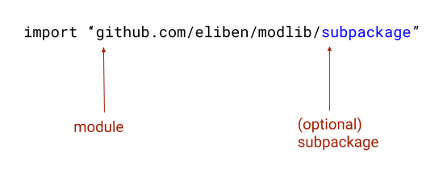
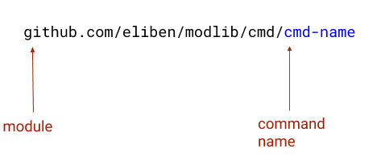

Update (2023-09-19): We've now published similar guidelines as part of Go's official documentation. This blog post will remain up-to-date.
A very common question Go beginners have is "how do I organize my code?". Some of the things folks are wondering about are:
- How does my repository structure reflect the way users import my code?
- How do I distribute commands (command-line programs that users can install) in addition to code?
- How do modules change the way I organize my code?
- How do multiple packages coexist in a single module?
Unfortunately, there is some easy-to-find advice online that's outdated and over-complicated, so I wanted to create an example that's both minimal and up-to-date. I believe that in these cases it's better to provide an example that's small and easy to understand. Advanced users can grow their projects from a simple starting point, if needed.
The concepts demonstrated here:
- Splitting a module into multiple packages, each importable by users; some of these packages import others from the same module.
- Internal packages, only importable from other packages in the same module, not by outside users.
- Commands/programs that users can install with go install.
Just one small definition and we'll get started: when I say user I mean the developer who is using my module, either by import-ing it in their code, or by go install-ing a program.
Getting started
The sample project this post describes is on GitHub: https://github.com/eliben/modlib
The project path is the module name. The go.mod file for the project contains this line:
module github.com/eliben/modlib
It is very common for Go projects to be named by their GitHub path. Go also supports custom names, but that is outside the scope of this post. Throughout the post, you can substitute github.com/eliben/modlib with github.com/your-handle/your-project or your-project-domain.io, whatever works for you.
The module name is extremely important, because it serves as the basis of imported names in user code:
Project layout
Here is the directory and file layout of the modlib repository:
├── LICENSE
├── README.md
├── config.go
├── go.mod
├── go.sum
├── clientlib
│ ├── lib.go
│ └── lib_test.go
├── cmd
│ ├── modlib-client
│ │ └── main.go
│ └── modlib-server
│ └── main.go
├── internal
│ └── auth
│ ├── auth.go
│ └── auth_test.go
└── serverlib
└── lib.go
Let's start with the files in the root directory.
LICENSE and README.md are fairly obvious and I won't spend time on them here.
go.mod is the module definition file. It contains the module name shown above, a Go version and that's it - my project has no dependencies. Dependencies are a whole different topic, quite unrelated to project layout. There's a lot of good documentation online. I suggest starting with the official documentation and blog posts - part 1, part 2, and part 3.
go.sum contains all the dependency checksums, and is managed by the go tools. You don't have to worry about it, but keep it checked into source control alongside go.mod.
config.go this is the first code file we're examining; it contains a single trivial function [1]:
package modlib
func Config() string {
return "modlib config"
}
The most important part here is the package modlib. Since this file is at the top level of the module, its package name is considered to be the module name. This is what you get when you just import github.com/eliben/modlib. The user code can look like this (Playground link):
package main
import "fmt"
import "github.com/eliben/modlib"
func main() {
fmt.Println(modlib.Config())
}
So the rule is simple: if your module provides a single package, or you want to export code from the top-level package of the module, place all the code for this at the top-level directory of the module, and name the package as the last part of the module's path (unless you're using vanity imports, in which case it's more flexible).
Additional packages
Now moving on to the clientlib directory.
clientlib/lib.go is a file in the clientlib package of our module. It doesn't matter what the file is called, and many packages consist of multiple files. What's important is that the package declaration at the top of the file says clientlib:
package clientlib
func Hello() string {
return "clientlib hello"
}
User code will import this package with github.com/eliben/modlib/clientlib, as follows (Playground link):
package main
import "fmt"
import "github.com/eliben/modlib"
import "github.com/eliben/modlib/clientlib"
func main() {
fmt.Println(modlib.Config())
fmt.Println(clientlib.Hello())
}
The serverlib directory contains another package users can import. There's nothing new there - just showing how multiple packages live alongside each other.
A quick word on nesting of packages: it can go as deep as you need. The package name visible to users is determined by the relative path from the module root. For example, if we have a subdirectory called clientlib/tokens with some code in the tokens package, the user will import that with import "github.com/eliben/modlib/clientlib/tokens.
It's also important to highlight that for some modules a single top-level package is sufficient. In the case of modlib this would mean no subdirectories with user-importable packages, but all code being in the top directory in a single or multiple Go files all in package modlib.
Commands / programs
Some Go projects distribute programs, or commands, instead of (or in addition to) importable packages. If this isn't relevant to your project, feel free to skip this section and don't add a cmd directory.
The cmd directory is the conventional location of all the command-line programs made available by the project. The naming scheme for programs is typically:
Such commands can be installed by the user using the go tool as follows:
$ go install github.com/eliben/modlib/cmd/cmd-name@latest
# Go downloads, builds and installs cmd-name into the default location.
# You can also pick a specific version after the @ sign, instead of "latest".
# The bin/ directory in the default location is often in $PATH, so we can
# just invoke cmd-name now
$ cmd-name ...
In modlib, there are two different command-line programs provided, as an example: modlib-client and modlib-server. In each of them, the code is in package main; the filename is also called main.go, but this isn't a requirement. It doesn't matter what the file names are called, as long as they're in package main.
In fact, since modlib is a real repository, you can install and run these tools on your machine:
$ go install github.com/eliben/modlib/cmd/modlib-client@latest
$ modlib-client
Running client
Config: modlib config
clientlib hello
$ go install github.com/eliben/modlib/cmd/modlib-server@latest
$ modlib-server
Running server
Config: modlib config
Auth: thou art authorized
serverlib hello
# Clean up...
$ rm -f `which modlib-server` `which modlib-client`
It's instructional to take a look at the code of modlib-server:
package main
import (
"fmt"
"github.com/eliben/modlib"
"github.com/eliben/modlib/internal/auth"
"github.com/eliben/modlib/serverlib"
)
func main() {
fmt.Println("Running server")
fmt.Println("Config:", modlib.Config())
fmt.Println("Auth:", auth.GetAuth())
fmt.Println(serverlib.Hello())
}
The important thing I want to highlight here is how it imports other code from modlib. In Go, absolute imports are the way to go. This applies to packages as well, not just commands. If code in package clientlib needs to import the main modlib package, it will do so by import github.com/eliben/modlib.
Internal packages
Another important concept is internal (or private) packages - packages that are used internally by a project, but which we don't want to export to users. This is especially important in Go with modules, due to semantic versioning. Everything exported by your project in v1 becomes a public API, and has to abide by semantic versioning compatibility guarantees. Therefore, it's imperative to export only the minimal API surface that's essential for users of your project. All the other code which your package needs for its implementation should live in internal.
The Go tooling recognizes internal as a special path. Packages in the same module can import it as usual (see the previous code snippet, for example). Users (that is, code outside the module) cannot import it, though. If we try to do this, we get an error:
use of internal package github.com/eliben/modlib/internal/auth not allowed
In the modlib project, there's a single package in internal. In real projects, there is often a whole tree of packages there.
If you're wondering whether some package belongs in internal, it's prudent to begin by answering "yes". It's easy to take an internal API and export it to users - just a quick renaming/refactoring commit. It's very painful to take an external API and un-export it (user code may depend on it); at stable module versions (v1 and beyond), this requires a major version bump to break compatibility [2].
I really like to put as much as possible in internal, not only private Go packages needed by my module. For example, if the repository contains the source code of the website of the project, I'd place that in internal/website. The same goes for any internal tools or scripts needed to work on the project. The idea is that the root directory of a project should be minimal and clear to users. In a way, it's self-documentation. A user looking at my project's GitHub page should get an immediate sense of where the things they need are located. Since users don't typically really need the stuff I use to develop the project, hiding it in internal makes sense.
But what about a pkg/ directory?
In some Go repositories you'll find a pkg/ directory with importable packages, and some online guides recommend having such a directory in your hierarchy. Why haven't I mentioned it so far?
In my personal view, while you may want a pkg/ directory in some rare scenarios, in the majority of cases it's an antipattern. It's much better to start your project without it. Here's why.
A pkg/ directory is commonly found/recommended in large projects where a complete application lives in a single repository; this application may contain Go packages, but also tools, static assets (HTML, CSS etc.), configuration and deployment scripts, and so on. In these cases it may seem unwise to scatter a bunch of Go package directories around in the repository, creating confusion about what's where.
That could certainly happen, but I'd argue that in such applications the code you place in pkg/ should almost certainly be in internal/ instead. If your project is a large top-level application, it shouldn't have importable packages; instead, importable packages should be split out to separate repositories which are small, self-contained and reusable. Don't forget that Go's semantic versioning applies at the module level.
What about projects that truly contain only importable packages? Well, then you most likely don't need pkg/ either, because it's just empty filling adding 4 characters to every import path using your project without any real benefit. If your project is an importable module, just follow the advice from the rest of this post. Many of the most popular Go modules like gin and cobra do just fine without a pkg/ directory.
To conclude, if you believe you need a pkg/ directory, spend some time thinking whether you really need it. In my experience, 90% of Go projects don't need a separate directory for their packages at all; out of those that do need one, 90% should choose to place their packages in internal/. If your project is truly in the 1% that could benefit from pkg/, that's absolutely fine! Just keep in mind that the odds for this are low.
Most importantly, start simple.
| [1] | Note that the name config.go is completely arbitrary. I'm not saying every project should have a file named config.go - it's just a synthetic example of some code in the top-level package of the module. This repository only describes the structure of a project - all the package and file names are arbitrary. |
| [2] | Check out part 4 and part 5 of the official blog posts on modules and versioning. |